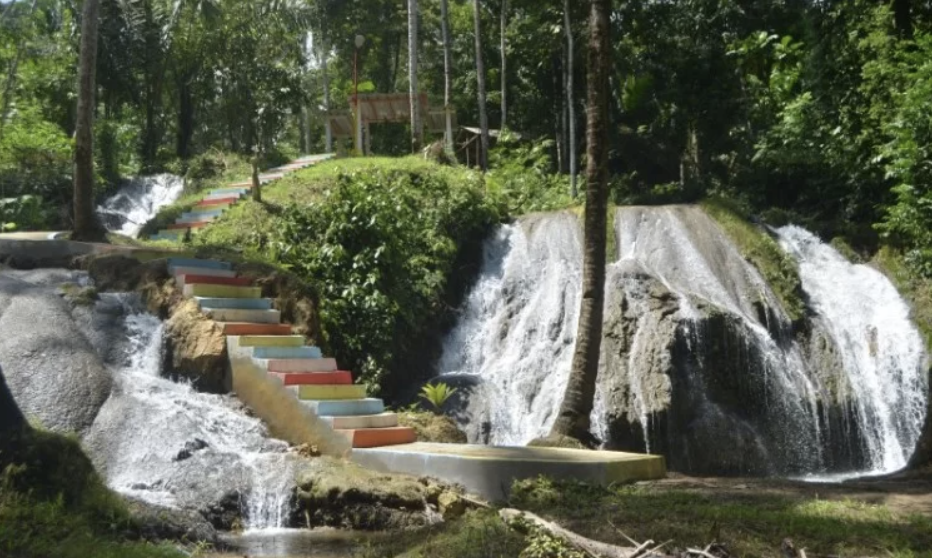
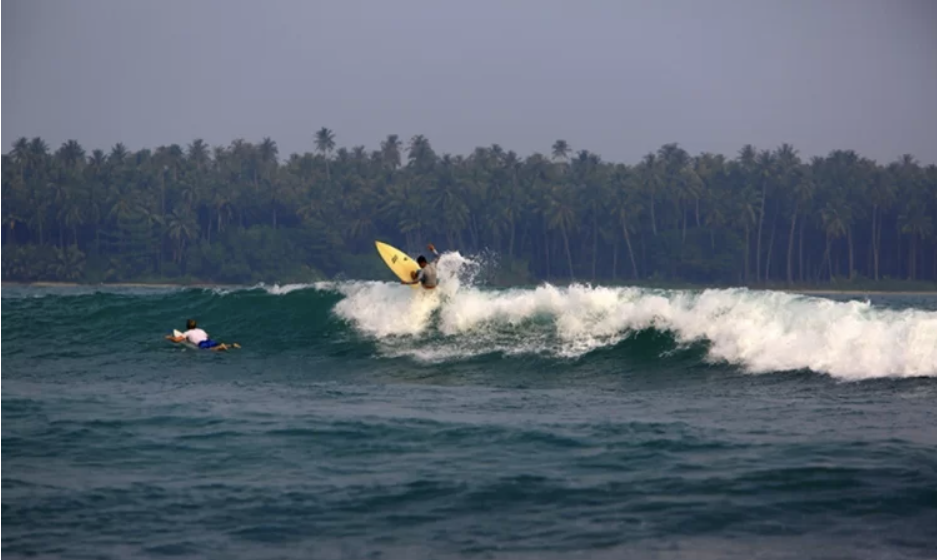

Pantai Indah Tureloto
pantai yang satu ini terletak di Desa Tureloto, Balefadoro, Tuho, Lahewa Kabupaten Nias Utara. Jika ingin melihat pantai dengan pemandangan air yang tenang dan jernih sehingga bisa untuk mandi atau sekedar bermain air, pantai Indah Tureloto adalah pilihan yang tepat. Pantai ini memiliki air jernih di bibir pantainya, Anda bisa melihat kedalaman air bahkan dengan mata telanjang saja.
Lokasi: Balefadoro Tuho, Kec. Lahewa, Kab. Nias Utara.

Air Terjun Homogo
Di Nias sendiri ada salah satu air terjun yang siap menyuguhkan panorama menarik untuk anda. Air Terjun Humogo terletak di Jalan Tola Maera, desa Fadoro. Air terjun ini memiliki air yang sangat jernih dan menyegarkan, sayang sekali jika kita melewatkan kesempatan untuk mandi di bawah deras air terjun. Air terjun ini memang tidak terlalu tinggi, curah airnya pun juga tidak terlalu deras, cocok untuk tempat bermain air sambil bersenda gurau bersama teman ataupun keluarga.
Lokasi: Fadoro, Kec. Gunungsitoli Idanoi, Kota Gunungsitoli.
Pantai Gawu Soyo
Pantai Gawu Soyo adalah pantai yang punya visual sempurna dan instagramable banget alias siap diunggah di media sosialmu. Hamparan pasir merah muda dipadukan dengan warna laut yang biru membentuk sebuah gradasi warna yang langka. Sayang sekali kalau sampai pantai satu ini dilewatkan.
Lokasi: Ombolata, Kec. Afulu, Kab. Nias Utara.
Museum Pusaka Nias
Berwisata ke suatu daerah sayang jika tidak mengenal kebudayaan dan warisan daerah tersebut. Di Nias ada salah satu bangunan museum yang bisa Anda kunjungi. Museum ini berisikan banyak sekali benda- benda seni dan budaya yang memiliki nilai budaya tinggi. Museum ini sering dijadikan sarana edukasi pembelajaran masyarakat lokal atau pelancong luar daerah yang ingin mempelajari kebudayaan Nias.
Lokasi: JL. Yos Sudarso, No. 134-A, P.O. Box 16, Iraonogeba, Kec. Mandrehe Barat, Kab. Nias Barat.
Taman Doa Bunda Maria
Wisata satu ini selain bisa dijadikan wisata rohani bisa juga dijadikan wisata budaya atau destinasi alternative bagi penganut agama lain. Lintas agama di Nias tidak memicu perpecahan malah menjadikan masyarakat Nias semakin belajar tentang arti toleran satu sama lain. Traveller yang mau melihat-lihat sekitar diperbolehkan walaupun tidak berdoa asal tetap menjaga ketenangan. Biaya tiket masuk Rp5.000 per orang yang digunakan untuk pemeliharaan.
Lokasi: Jl. Raya Pelud Binaka No.KM. 6,5, Fodo, Kec. Gunungsitoli Selatan, Kota Gunungsitoli.

Pantai Indah Sorake
Pantai Soroke adalah surganya para peselancar. Pantai yang masih berada di Nias Selatan, dan menjadi salah satu pantai dengan ombak terbaik yang ada di dunia, untuk Anda pecinta surfing nggak bakalan nyesel kalau mampir kesini.
Lokasi: Jl. Sorake, Botohilitano, Kec. Fanayama, Kab. Nias Selatan.